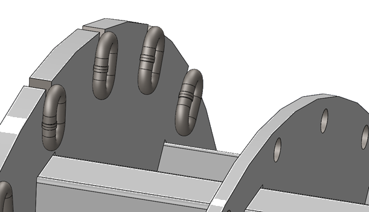
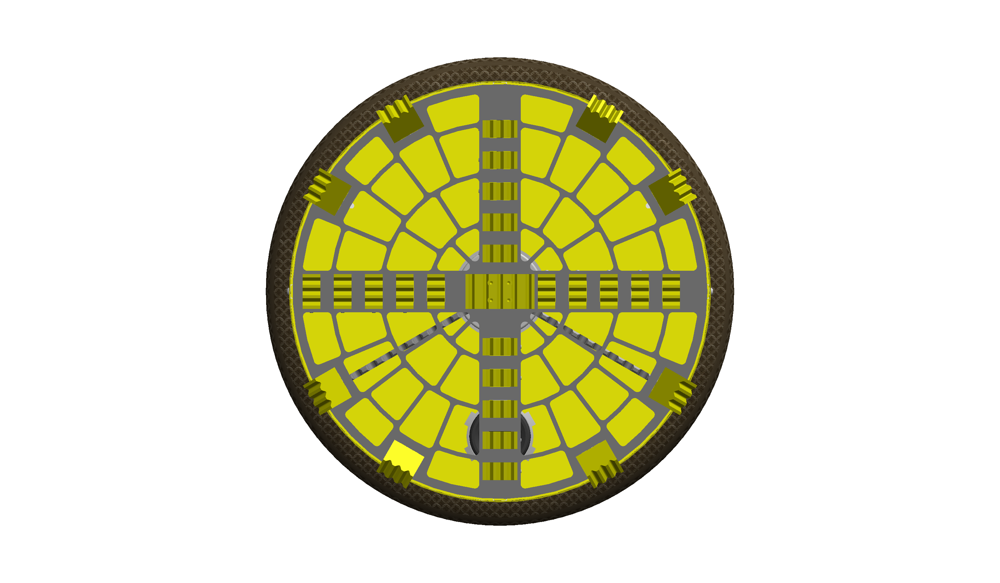
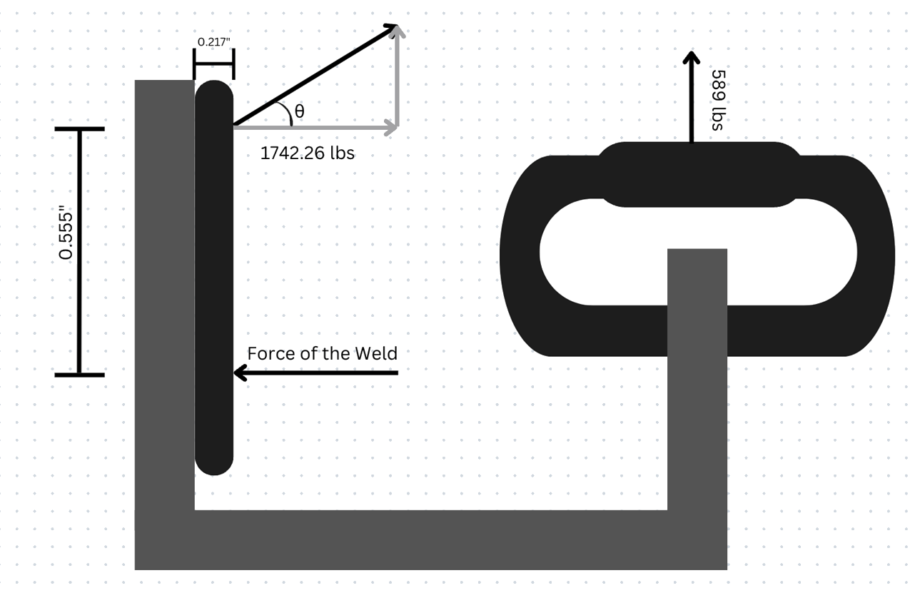

Mechanical design · Load paths · Hand calculations
Hyperloop TBM Soil Gripper
Soil-gripper design and structural calculations · CU Hyperloop
My work focused on the soil-gripper subsystem: the gripper concept, protective shroud, structural load path, and hand calculations for tearout and welded connections.

Gripping the tunnel wall
The team’s tunnel-boring machine uses inflatable grippers to react digging loads against the tunnel wall. The surrounding structure must protect the inflatable elements while transferring loads into the machine. The full TBM and hexapod are team systems; my emphasis was the soil-gripper subsystem.

Shroud and force transfer
The design review identifies puncture protection, bulging, and force transfer as the shroud’s three main problems. My work included the protective shroud and the structural path carrying load from the gripper into its supporting structure.
Tearout and weld calculations
I performed most of the tearout and weld calculations in the structural section. The calculations examined the connection geometry and resolved forces at the welded attachment. The review lists a 0.0408 in calculated minimum thickness against a 0.2 in design thickness for its tearout check. These are the documented design-review calculations, not a new independent verification of the entire system.
